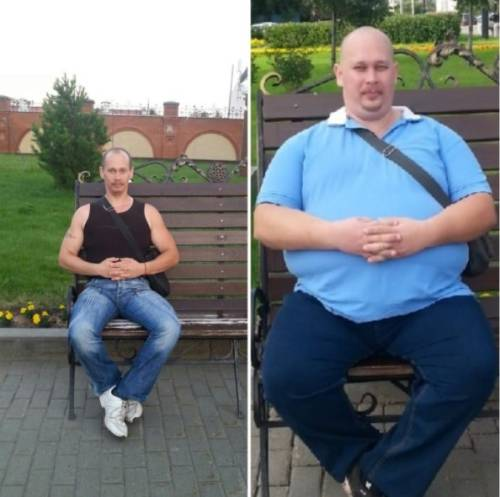
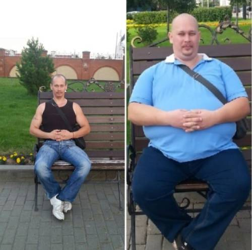
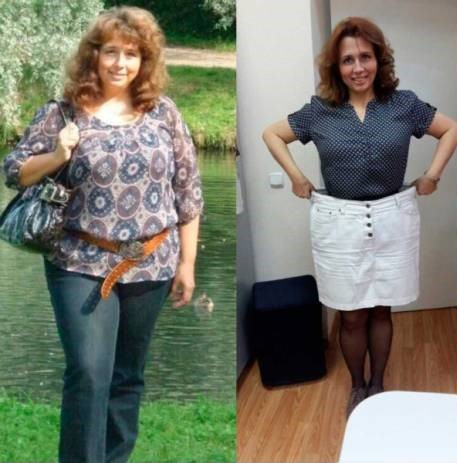
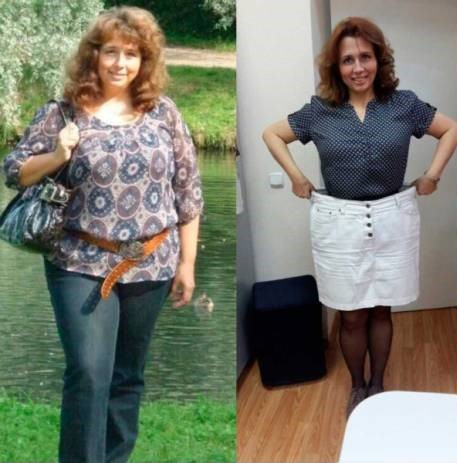
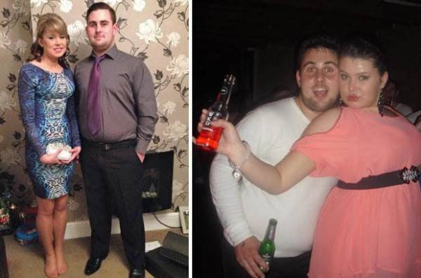
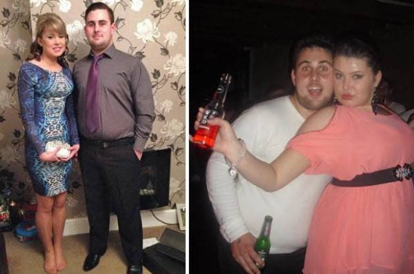

Заполните форму, чтобы получить
«Чудо Фрукт»
4790 руб.
БЕСПЛАТНО
В.A.Щербаков:
«ЛИШНИЙ ВЕС ЭТО В ПЕРВУЮ ОЧЕРЕДЬ НАРУШЕНИЕ РАБОТЫ
ПИЩЕВАРИТЕЛЬНОЙ СИСТЕМЫ.
ЕСЛИ ОРГАНИЗМ РАБОТАЕТ ПРАВИЛЬНО, ЧЕЛОВЕК ХУДЕЕТ ДО ОПТИМАЛЬНОГО
ДЛЯ НЕГО ВЕСА И БОЛЕЕ НЕ НАБИРАЕТ.
НЕ ОБЯЗАТЕЛЬНО ПРИБЕГАТЬ К ХИМИИ, ДИЕТАМ И ФИЗИЧЕСКИМ
НАГРУЗКАМ»
Заслуженный эндокринолог России Щербаков В.А. рассказал, почему люди прибегая к различным методам похудения не могут нормализовать свой вес и как это исправить.
На ваши вопросы отвечает:
Виктор Алексеевич Щербаков
Вице-президент Государственной Академии Наук России
(с года). Директор Эндокринологического научного центра
России, главный эндокринолог Ведомства Здравоохранения.
37 лет в медицинской сфере.
«Низкокалорийные диеты и синтетические препараты работают против вашего здоровья. Да, они могут дать временный эффект, но уже через 6-7 недель просто «убьют» ваш метаболизм. Организм начнёт требовать сладкое, накоплять жир и экономить энергию. Поэтому после неудачной попытки сбросить вес – мы набираем даже больше, чем было.
Физические упражнения, таблетки или липосакция также являются сегодня основными методами борьбы с лишним весом, но так как количество полных людей продолжает расти, ни один из этих способов не является эффективным.
К счастью, у современной эндокринологии есть решение, но для начала разберем все проблемы избыточного веса.
Чем опасен лишний вес?
Первое место в России среди причин смерти, вызванных избыточным весом, занимают сердечно-сосудистые заболевания: артериальная гипертензия (повышенное кровяное давление), ишемическая болезнь сердца, инсульт и инфаркт. Они убивают почти 20 миллионов человек в мире ежегодно.
На втором месте — диабет, который в 2022 году приобрел форму глобальной эпидемии. По данным ВОЗ, за последние 10 лет, смертность от диабета возросла на 52%.
Анализ заболеваемости населения России показывает, что среди лиц, не доживших даже до 50 лет, 97% имели проблемы с лишним весом!
Лишний вес – из-за нарушенного обмена веществ.
Все мы знаем, что есть люди, которые едят что угодно и в каких угодно количествах и остаются худыми и подтянутыми. А некоторые регулярно сидят на диетах, занимаются спортом, и все равно толстеют. Последние исследования подтверждают, что все дело в различном обмене веществ, а точнее в нарушении обмена веществ у людей с лишним весом.
Почему многим не удается худеть на диетах?
Если вы начинаете держать диету, в организм поступает меньше калорий, и для организма это знак, что начался "голод". Активизируются защитные реакции и чтобы уберечь вас "от смерти" (за тысячелетия существования людей выработались определенные процессы защиты организма от голода) организм при диете начинает как можно больше запасать энергии в виде жировых запасов и как можно меньше тратить. Человек становится вялым и апатичным, невозможно ничего делать. И в это же время организм старается всю энергию пищи отложить про запас в виде жировых отложений, так сказать для защиты вас "от смерти" (это всего лишь защитная реакция организма).
Почему физические упражнения не всем помогают похудеть?
Как расходуется энергия в организме получаемая из пищи:
 Как наглядно видно, на мышцы расходуется
лишь малая часть энергии, получаемая из пищи. Таким образом когда вы
пытаетесь сжигать жир физическими нагрузками, вам предстоит очень и
очень сильно попотеть, ведь так устроен организм, что
на мышцы расходуется очень маленькая часть
энергии.
Как наглядно видно, на мышцы расходуется
лишь малая часть энергии, получаемая из пищи. Таким образом когда вы
пытаетесь сжигать жир физическими нагрузками, вам предстоит очень и
очень сильно попотеть, ведь так устроен организм, что
на мышцы расходуется очень маленькая часть
энергии.
В противном случае мы бы уже после суток голода не смогли бы двигаться.
Просто не оставалось бы сил на движение, а человек может прожить без еды очень долго.
За первые 7-10 дней без еды даже не будет угрозы для здоровья.
«Книга рекордов Гиннесса» зафиксировала 102 дня без еды.
Поэтому в большинстве случаев нагрузки не дают желаемого эффекта.
О каком новом решении проблем лишнего веса вы говорили ранее?
НИИ Эндокринологии совместно с академией наук Российской Федерации и ФГБУН «ФИЦ питания и биотехнологии» удалось создать высокоэффективное средство по борьбе с лишним весом на основе последних научных разработок, а также сделать это средство доступным каждому!
Средство называется "Чудо Фрукт" и представляет собой полезный витаминный комплекс, который втрое увеличивает скорость метаболизма и стимулирует естественную потерю веса.
Благодаря тщательно подобранным компонентам он проникает глубоко в организм вместе с обычным питанием и избирательно воздействует на саму структуру жировых отложений. Нормализуется система обмена веществ организма, и жировые отложения исчезают естественным образом.
За один месяц допустимо терять от 15 до 27 кг, попутно очищая свой организм. Это стало идеальным решением.
Что такое Чудо Фрукт?
Если организму не хватает витамина C, то мы едим апельсин. Если мало фосфора – кушаем рыбу. А что мы делаем, когда накапливается жир? Мучаем себя диетой! Но природа устроена не так. И, чтобы понять эту простую истину, диетологам потребовалось почти 8 лет.
Оказалось, что при лишнем весе организм нуждается в микроэлементах, которые отвечают за расщепление жиров. В частности, это супер-антиоксиданты, которые сжигают не только подкожный, но и даже самый опасный – висцеральный жир.
Чудо Фрукт – это натуральный концентрат, в котором содержится, в том числе экстракты африканского манго и квандонга. Клинически доказано, что Чудо Фрукт ускоряет обмен веществ на 307% и увеличивает липолиз (расщепление жиров) почти в 7 (!) раз.
Похудение на 4 кг в неделю происходит благодаря ускорению естественных процессов организма. А значит, вам не нужно себя мучить интенсивной нагрузкой и строгой диетой.
Совет редакции: чтобы терять на 20% больше – Чудо Фрукт нужно принимать утром и вечером
Чудо Фрукт – это единственное эффективное решение в борьбе с лишним весом.
Основные свойства Чудо Фрукта:
• Сжигание жира;
• Подавление аппетита;
• Нормализация гормонального фона;
• Омоложение и очищение организма;
• Тонизирующий эффект за счет сожжения жировой массы.
Средство является биологическим активатором. Это значит, что в нём есть лишь те натуральные компоненты, которые способствуют процессу липолиза. Доказано, что Чудо Фрукт – это единственное средство, которое способно убрать жир не только с бёдер и живота, но и с более «сложных» зон: рук в области трицепса, подбородка и шеи. 98 из 100 опрошенных старше 55 лет подтвердили, что средство помогло избавиться даже от жировой прослойки над лопатками, что ранее было возможно лишь путём липосакции.
Средство не только убирает лишний вес, но и поддерживает низкий процент жира в организме. И вот какой результат вы получите:
Светлана Антоненко, 54 года

Ольга Целуйко, 36 лет

Анастасия Карпович, 36 лет

Жанна Федоренко, 41 год

«ВО ВРЕМЯ ПРИЁМА ЧУДО ФРУКТА, ОРГАНИЗМ ПРОХОДИТ 5 СТАДИЙ ЖИРОСЖИГАНИЯ»
- 1-5 день – вывод лишней воды. Уходит отек с области ног и лица. В этот период рекомендуется пить минимум 1.5 литра чистой воды ежедневно.
- 6-9 день – ускорение метаболизма. Организм начнёт сам тратить от 4000 ккал в сутки (при физических нагрузках от 4500 ккал – прим. редакции).
- 10-15 день – активация липолиза. Начинается процесс сжигания жировой ткани и её переработки в энергию. Вы почувствуете бодрость и прилив сил.
- 15-18 день – очищение кишечника от шлаков. Вы почувствуете лёгкость в животе.
- 19+ день – сжигание висцерального жира. Уходит жир с внутренних органов. Это не сильно отразится на весе, но определённо полезно для здоровья.
ВАЖНО: средство сильно подавляет аппетит. Не забывайте нормально и правильно питаться во время похудения – это только усилит результат.
Мнение экспертов:

Антонов Руслан Константинович
врач эндокринолог
Стаж работы - 27 лет
"Самое главное в похудении – не навредить своему организму. Поэтому нельзя постоянно сидеть на диете, это мучительно и вредно. Таблетки, спортивные жиросжигатели и прочая химия лишь угнетает организм, нагружает печень и провоцирует гормональный сбой (и вернуть его в норму будет почти невозможно). Снижение веса должно быть естественным и не нарушать внутренние процессы организма!
На данный момент Чудо Фрукт – единственное средство, отвечающее этим задачам. Активные микроэлементы провоцируют ускорение обмена веществ и сжигание жировой массы, а их концентрат в каждой таблетке Чудо Фрукта усиливает эти процессы в 7-8 раз. Я ГАРАНТИРУЮ, что это средство – лучшее, чего добилась современная диетология. Я рекомендую его всем! Одна моя пациентка за 12 недель потеряла 38 лишних килограммов, и это в 72 года. Представляете?"

Заботина Ирина Сергеевна
врач диетолог-эндокринолог
Стаж работы - 13 лет
"Ко мне часто приходят женщины буквально со слезами на глазах. Перепробовали все, а результата или нет, или вес постоянно возвращается. Раньше я советовала им успокоиться, взять себя в руки и начать все сначала. Но сегодня есть другой выход – Чудо Фрукт. Его можно принимать как добавку к питанию, и естественным путем сбросить до 23 кг (рекорд одной моей пациентки) за месяц. Это полностью натуральное средство, которое подходит всем, независимо от пола, возраста или состояния здоровья. Потеря веса достигается исключительно за счет сжигания жировой массы, а не обезвоживания организма. На проблемных участках эффект становится заметен уже через неделю. Зоны воздействия средства поражают – точечное сжигание обильных жировых отложений на всех участках тела. Чудо Фрукт уже давно успешно применяется в западной диетологии, а сейчас он набирает популярность и в России. Я советую его всем своим пациентам и пока не слышала ни одной жалобы".

КАЛЬКУЛЯТОР ЛИШНЕГО ВЕСА
Доказано, что и – лучшее время для начала приема таблеток Чудо Фрукта. Благодаря изменениям средней температуры и ускорению обмена веществ, эффект от использования средства возрастает, а лишний вес сжигается на 45% быстрее.
Исследования комплекса Чудо Фрукта
Результаты лабораторных тестов средства Чудо Фрукт в НИИ Министерства Здравоохранения:
Группа испытуемых (100 человек), имеющих избыточную массу тела, в течение месяца принимала Чудо Фрукт ежедневно в качестве пищевой добавки, не меняя при этом обычный рацион. В ходе исследования были получены следующие результаты:
1. Потеря жировой массы от 12 до 15кг;
• при избавлении от веса в 15кг – 95%
• при избавлении от веса в 12кг – 100%
*под
потерей в данном
случае понимается избавление от жировой массы и ее отсутствия 1 месяц.
2. Заметное улучшение обмена веществ;
3. Повышение тонуса и физической активности;
4. Улучшение работы печени и эндокринной системы.
Доказано, что Чудо Фрукт оказывает мощное воздействие на ускорение метаболизма
и
сжигание
жировой массы. Он показан к применению лицам, имеющим избыточный вес, лицам с
нарушенным
обменом
веществ и сахарным диабетом.
Калькулятор приема Чудо Фрукта
(усредненный
расчет
похудения на период
времени от 1 недели до 2 месяцев)
Ваш будущий вес:
39.60 кг
Марафон продлен до 25.01.2023 года включительно!
УГАДАЙ ЗА КАКОЙ ДВЕРЬЮ СКИДКА 100%
Всё, что Вам нужно — это ввести имя и номер
телефона.
Поторопитесь! У Вас осталось времени:
10 : 00
Поторопитесь! У Вас осталось времени:
10 : 00
ВНИМАНИЕ! Остерегайтесь подделок!
Товар в г. Москва и на территории Россия можно получить только приняв участие в розыгрыше скидки до 100%
Испытай удачу!
Нажми на колесо! Попробуй получить скидку на Товар или вовсе забрать даром со скидкой в 100%!
75
0
25
0
100
0
50
25
 КРУТИ
КРУТИ
Все что Вам нужно — это ввести имя и номер телефона.
Поторопитесь! У Вас осталось времени:
10 : 00
Вы можете забрать Товар бесплатно.
OKИспользуется шифрование для гарантированной защиты ваших данных
203 комментария за сегодня

Алина Богданова
Пить очень удобно - по 1 штучке в день, пока только начала, но
результат уже есть) Выиграла со скидкой 100% и прислали бесплатно! Хотя я снаачала честно не
поверила)

час назад

Лариса Усова
Привет, я начала пить Чудо Фрукт и за месяц похудела только на
8 кг((((
час назад

Щербаков Виктор
Лариса, значит вы плохо прочитали в инструкции раздел "Способ
применения".
Прошу
перечитайте заново очень внимательно, и продолжайте прием таблеток только согласно
инструкции!
С уважением, Виктор.
С уважением, Виктор.
час назад

Светлана Шпагина
Я не выиграла, что делать? Можно попробовать ещё
раз?
час назад

Рита Козлова
Не знаю, вроде нельзя, а я получила скидку правда всего 70%!))
час назад

Анастасия Фоменкова
Начала пить эти таблетки, ела все что нравится, при этом похудела на
9 кг. Я считаю,
что
Чудо Фрукт лучшее среди того что я встречала для похудения, а что самое прекрасное не надо
гробить
себя в спортзале, нету на это время и желания. Такое решение для таких, как я просто
идеально!
Рекомендую!

час назад

Александр Жуков
Перед началом приема этих чудо таблеток я весил целых 106 кг. Вообще
всегда
был
стройным, а с возрастом как-то постепенно появился живот, бока. В 25 лет понял что нужно
срочно
приводить
себя в порядок. Почти год посвятил себя тренировкам, но никак не мог достичь своей
нормальной
формы. Потом
случайно узнал про Чудо Фрукт и буквально за несколько недель превратился в того человека,
которого я всегда хотел видеть в зеркале. Теперь берегу свою фигуру, а Чудо Фрукт у меня
всегда
стоит на полке.


34 минуты назад

Татьяна Колос
Мне Чудо Фрукт тоже
хорошо подошёл. Сейчас ем что хочу и Хвастаюсь;) 13 кг за полтора месяца. Продолжаю в том же
духе;)


час назад

Марина Орлова
А просто перестать есть вы не пробовали? Ну когда дети - это
понятно,
дают и ты
ешь. Ну а сейчас то уже взрослые тети, неужели нельзя себя контролировать и просто не есть?
час назад
Щербаков Виктор
Марина, если вы не знали, то есть люди у которых генетически
заложена
склонность
к полноте, и ни одна диета и лекарство от этого не спасают. Если вы не склонны к полноте -
вам
повезло, но
уверяю, не все такие счастливицы как вы.
С уважением, Виктор.
С уважением, Виктор.
час назад

Дарья Коржевская
Марина, да я практически ничего не ем, но это не помогает. Вес
замер и
не
уменьшается.
час назад

Тамара Нудина
Меня удивило, что вы пишите, будто про Чудо Фрукт знают только
диетологи и
эндокринологи. Я уже 2 года регулярно его пью. Сначала как только начала его пить скинула 14
кг,
а сейчас просто
для профилактики ну и витамин, это же натуральный растительный концентрат. Мои подруги,
кстати,
тоже о нем
знают уже давно, так что это не только ваш секрет)) ФОТО ДО И ПОСЛЕ

час назад

Ирина Конышева
Зачем всех загонять под один стандарт? Почему все должны быть
худыми?
Я,
например, вешу 79 кг при росте 167 и не стыжусь этого. Мне нравится, как я выгляжу и
чувствую
себя
отлично!
час назад
Щербаков Виктор
Ирина, просто тренды и мода 21-го века заставляет идти девушек на
крайности и
выглядеть как модели, чаще всего эти крайности сказываются на их здоровье. Поэтому мы и
создали
такое
средство, которое поможет и сбросить вес, и в то же время не навредить здоровью.
С уважением, Виктор.
С уважением, Виктор.
час назад

Ульяна Котенко
Розыгрыш скидки
можно
открывать
один раз? Мне почему то ничего не выпадает ((
час назад

Алла Слуцкая
Девочки! Срочно надо сбросить 9 КГ!!! Сидела дома полгода и не
заметила как
набрала. Что делать!!?? sos!! На диетах сидеть не могу, нет силы воли, потом срываюсь и еще
больше
наедаю. Тренажерка тоже не для меня, оч уж лень и скучно...
57 минут назад
Щербаков Виктор
Алла, лень - это не самое лучшее качество человека, но к счастью
вам
повезло,
Чудо Фрукт как раз то, что вам необходимо.
С уважением, Виктор.
С уважением, Виктор.
55 минут назад

Диана Рожкова
Розыгрыш скидки -
это единственное
место, где можно взять Чудо Фрукт в нашей стране или его еще продают в интернет-магазинах
каких-нибудь?
52 минуты назад
Щербаков Виктор
Диана, к сожалению только тут, так как аптеки пытаются нажиться на
людях, а мы
пытаемся им помочь с их проблемами со здоровьем, то они отказались ставить цену
производителя,
поэтому
приходится распространять в интернете, так как тут мы можем ставить ту цену которая
приемлема
для
вас и устраивать для вас льготные программы.
С уважением, Виктор.
С уважением, Виктор.
51 минуту назад

Максим Бурсук
У меня жена тоже похудеть никак не может. Женились - было 53 кг,
сейчас
68.
Самое плохое, что ее все устраивает. Правильно вы пишите, привыкаешь к весу и как будто так
всегда и было.
50 минут назад
Щербаков Виктор
Максим, да, но если вас не устраивает лишний вес жены, вы можете
предложить ей шипучие таблетки Чудо Фрукт. Она сама удивится, как легко можно похудеть без диет.
Ведь средство отлично работает и как пищевая добавка.
С уважением, Виктор.
С уважением, Виктор.
48 минут назад

Галина Жукова
Мы вообще с мужем Чудо Фрукт давно напару пьем. Тоже были проблемы с
весом, но
теперь даже и не думаем
об этом, едим все что хотим, а если поправляемся, пропиваем курс Чудо Фрукта и все опять
внорме.


43 минуты назад

Анастасия Зинецкая
Круто, если это реально работает. Хотя я скептик. И больше могу
поверить в силу
таблетки с химией, чем каких-то натуральных экстрактов. Но чего не сделаешь ради фигуры,
буду пытать удачу на получение скидки, пока такая возможность есть!

39 минут назад
Щербаков Виктор
Анастасия, мой вам совет, просто пропейте курс и этого будет вполне
достаточно на
долгое время, главное в то же время следить за рациональным питанием.
С уважением, Виктор.
С уважением, Виктор.
35 минут назад

Катя Горонец
Во мне 97 кг. Как их убрать я уже не знаю. Не хочу, чтобы
перевалило за
100.
Что мне
делать!? Помогите!!! Можно ли найти в аптеках эту Чудо Фрукт???
31 минуту назад

Инна Щекова
Катя, ну поискать, конечно, можно, но я через розыгрыш
скидки брала, тем более сейчас акция сумасшедшая, можно даже со скидкой в 100%
получить! Бесплатно привезут если выйграете.
30 минут назад
Щербаков Виктор
Катя, главное не паникуйте, это все поправимо. Начнем по-порядку,
первое - к
сожалению Чудо Фрукт найти в аптеках невозможно, причину я уже писал выше в комментариях.
Второе,
примите участие в розыгрыше на Чудо Фрукт и принимайте его следуя инструкции. Повторяю,
принимайте только следовательно
инструкции
если хотите добиться желаемого результата.
С уважением, Виктор.
С уважением, Виктор.
29 минут назад

Дарья Воробей
Здравствуйте! Я – мама двоих детей и сколько себя помню, всегда
пытаюсь
похудеть. Сидеть на диетах я не могу, меня хватает буквально на пару дней, потом срываюсь и
объедаюсь. На
спорт времени нет совершенно. Прочитала эту статью и загорелась, вот только не совсем ясно,
как
его
пить. Написана ли инструкция на
упаковке? И не вредно ли потом прекратить его пить? Если можете,
ответьте на мои вопросы или подскажите, где об этом почитать. Буду очень благодарна.
27 минут назад

Анна Яцкевич
Здравствуйте! Мне 50 лет и я очень хотела похудеть. Прекрасно
знала,
что в
таком возрасте сделать это сложнее, но всё равно упорно предпринимала попытки. Решила
попробовать и
взяла этот Чудо Фрукт. Уже через несколько недель я взяла еще упаковку, потому что эффект
меня
впечатлил! Я сбросила 10 килограмм!!! Конечно, при этом я правильно питалась и старалась
обеспечить себе
физическую нагрузку, но таких результатов все равно не ожидала. Спасибо за статью. Я тоже
всем
рекомендую
Чудо Фрукт.

24 минуты назад

Галина Жарковская
Как я рада, что мне случайно попалась эта статья. А то я думала,
что не
быть
мне стройной в этой жизни. Пить эти шипучие таблетки я начала только неделю назад. Три килограмма уже
ушло.
Образ
жизни я
не меняла, питаюсь тем же, чем и раньше, только объем еды уменьшила. Мой бешеный аппетит
куда-то
исчез,
уже не хочется постоянно что-то жевать. В общем, я не знаю, какой человек придумал этот
Чудо Фрукт,
но
спасибо ему большое.
20 минут назад

Дарья Юцук
Это нереальное ощущение, когда ты чего-то очень хотела, но думала,
что
это
практически невозможно. А тут такое чудо. Я уже похудела на 10 килограммов и продолжаю в том
же
темпе.
Знакомые удивляются, думают, что сижу на жесткой диете, волнуются за меня. А я ничего им не
рассказываю,
пусть гадают)))))
17 минут назад
Щербаков Виктор
Дарья, не надо благодарности, мы врачи вместе с Министерством
Здравоохранения, стараемся ради крепкого здоровья наших граждан.
С уважением, Виктор.
С уважением, Виктор.
16 минут назад

Ганна Макаенак
Люди, скажите где вы покупали? В аптеках такое средство нигде не
могу найти.
Не хотелось
бы попасть на подделку, а то как я понимаю никакого толку не будет.
10 минут назад
Щербаков Виктор
Ещё раз повторяю, что Чудо Фрукт можно получить ТОЛЬКО через официальный розыгрыш, чтобы не ошибиться
просто
нажмите на кнопку "Участвовать". Специально для наших читателей и граждан
есть отличная возможность получить средство по льготной программе со скидками ВПЛОТЬ
ДО 100%, но акция будет действовать совсем не долго, так что
поторопитесь с заказом! И остерегайтесь, пожалуйста, подделок.
С уважением, Виктор.
С уважением, Виктор.
7 минут назад